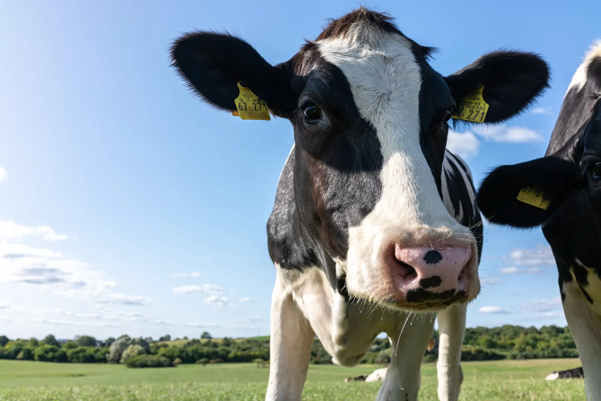
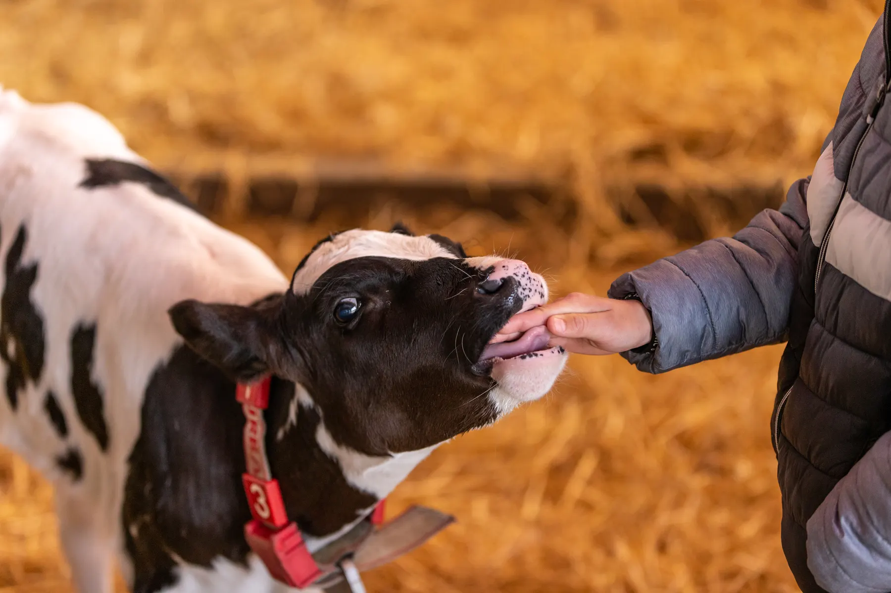
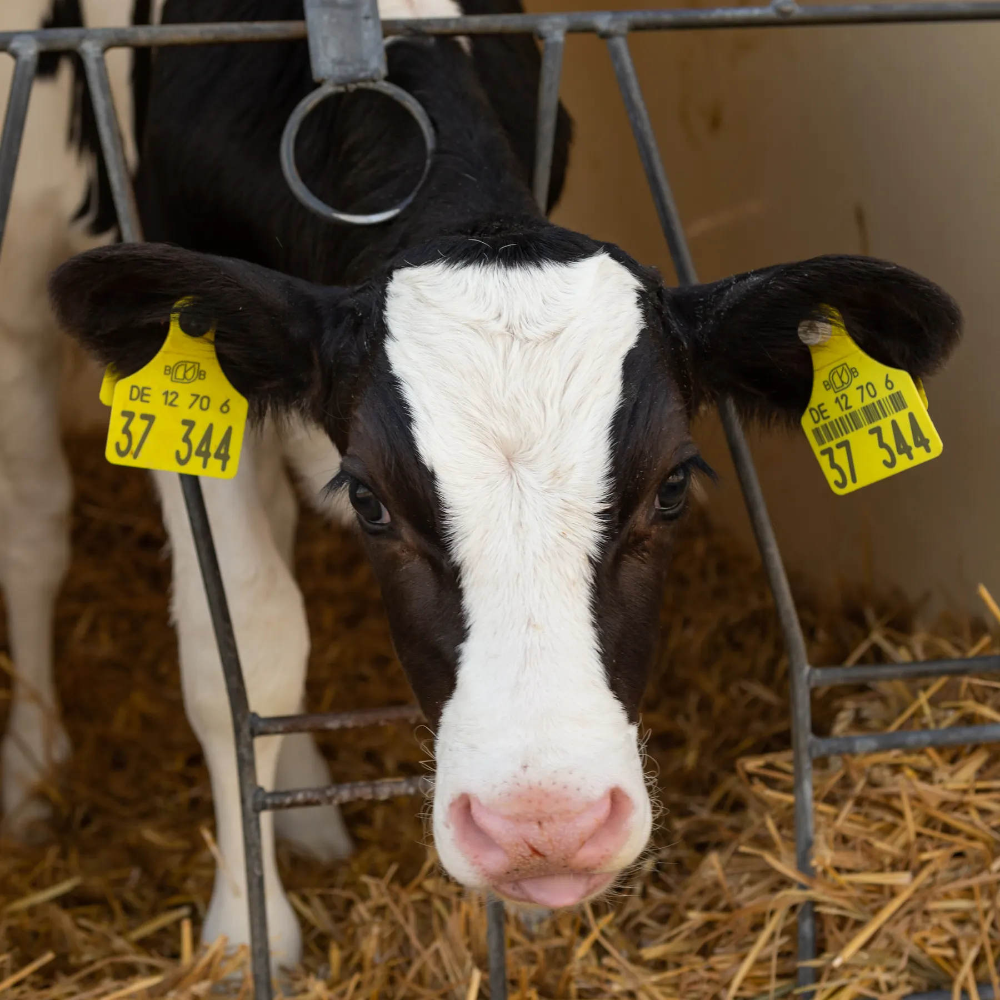
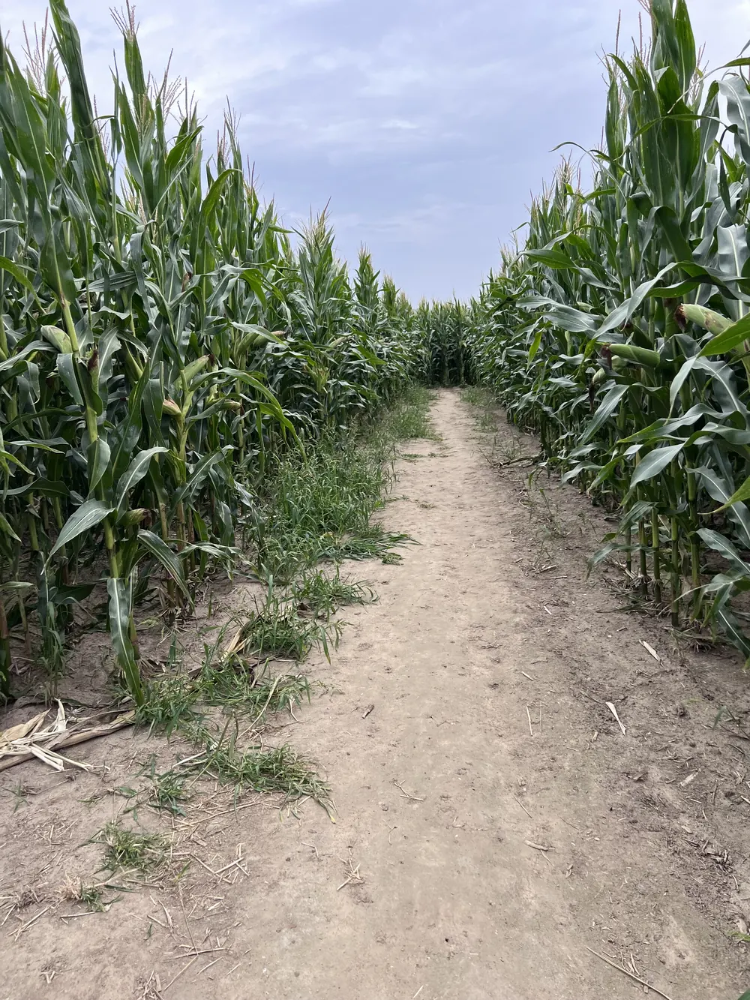

- Startseite
- Willkommen
Willkommen bei Hemme Milch
Schön, dass du da bist!
Du hältst gerade ein Produkt von unserem Hof in der Uckermark in der Hand. Unsere Milch stammt von eigenen Tieren und Partnerhöfen aus der Region und ist in nur 24 Stunden von der Kuh bei dir im Kühlregal.





Von der Kuh zu dir in 24 Stunden
Schön, dass du Teil der Hemme‑Milch‑Familie bist!
Gemolken
Von unseren eigenen Kühen und Partnerhöfen aus der Region.
Abgefüllt
Frisch in unserer eigenen Molkerei auf dem Hof.
Ausgeliefert
Bestellung, Touren und Auslieferung machen wir selbst.
Bei dir
Im Kühlregal und kurz darauf in deiner Hand.
Entdecke Hemme Milch
Unsere Produkte
Von Vollmilch über Joghurt bis Butter. Hier findest du alles, was wir täglich frisch in unserer Molkerei abfüllen.

LiveUnsere KuhCam
Schau unseren Kühen rund um die Uhr live in den Stall.
 Mi bis So · 11–18 Uhr
Mi bis So · 11–18 UhrBesuch uns auf dem Hof
Hofcafé und Milchladen in Schmargendorf bei Angermünde.

Veranstaltungen
Aktionen, Führungen und Feste für die ganze Familie. Hier siehst du, was als Nächstes auf dem Hof ansteht.